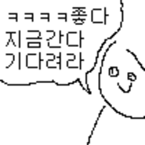
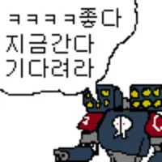

같은 대사에서 내 취향의 짤을 먼저 찾으려면
한눈에 보기
- 목적
- 국내·해외 밈을 담은 지식 DB로 웹 검색에서 일반 이미지를 줄이고, 관련도 높은 짤 사이에서 사용자 취향을 반영하는 방법을 검토한다.
- 현재 상태
- Windows v1.3.0.21의 코드·번들·격리된 로컬 검색을 확인했다.
- 핵심 결론
- 검색 품질의 첫 과제는 일반 사진과 밈을 구별하는 일이다. 개인화는 그 뒤에 적용한다.
- 원인 또는 판단 근거
- 현재 카탈로그는 3개 계열의 예시다. 미등록 영어 검색에 일반적인 밈 확장이 없고, 웹 후보에서 밈 단서를 판단하는 규칙도 제한적이다.
- 결정
- 제품에서 말하는 ‘밈사전’은 국내·해외 밈의 이름·대사·템플릿·파생 관계를 연결한 DB다. 버전형 SQLite 사전과 로컬 규칙 정렬을 구현 후보로 권한다.
- 다음 행동
- 국내·해외 자료 표본으로 후보 DB를 만들고, 기존 검색과 동일한 결과에서 일반 이미지 오탐과 미등록 밈 누락을 비교한다.
- 최종 갱신
- 2026-11-25 · 릴리스 커밋
930172b
질문
처음 보는 밈도 일반 이미지에 묻히지 않게 할 수 있을까? 검색 결과에 붙은 대사·출처·템플릿 단서를 기존 사전과 대조하고, 새로운 표현을 가진 후보도 검색 의도와 맞으면 남기는 것이 목표다.
“좋다 지금 간다 기다려라”를 입력한 두 사람이 서로 다른 짤을 원한다면? 한 사람은 케장콘 원본을, 다른 사람은 헬다이버즈 패러디를 원한다. 이 사례로 사전, 검색 조건, 취향이 각각 무엇을 결정해야 하는지 살펴봤다.
짧은 답
- 대량 수집의 단위는 밈 항목과 그 근거다. 해외 원명·한국어 별칭·사용 상황·템플릿·변형 관계를 연결하면, 같은 파일을 아직 갖고 있지 않아도 검색 단서를 얻을 수 있다.
- 검색어는 후보를 모으고 태그는 범위를 좁힌다. 현재 로컬 태그가 계열 별칭까지 읽는 예외가 있다. 그중 어떤 버전을 먼저 볼지는 사용자의 선택 기록으로 정할 수 있다.
- 내가 뭐라고 부르는지는 별도 문제다. 예컨대 사용자가 ‘출동짤’을 특정 짤의 내 별칭으로 지정하면, 원래 제목을 몰라도 다음에 바로 찾을 수 있다.
현재 검색의 동작 근거
릴리스의 카탈로그와 수집·정렬 코드를 읽고, 기본 제공 짤만 넣은 새 라이브러리에서 같은 검색을 반복했다.
사전에 들어 있는 밈
| 밈 계열 | 기본 제공 변형 | 인식하는 표현 |
|---|---|---|
| 너클즈 승인 | 도장 GIF, 긴 버전 GIF | 승인, 너클즈, approved, knuckles |
| 좋다 지금 간다 기다려라 | 케장콘 PNG, 헬다이버즈 2 PNG | 원 대사, 케장콘, 케쟝콘. ‘비슷한 문구 포함’을 켜면 내가 간다 기다려라, 당장 간다 기다려라도 같은 계열 |
| 틀깨기! | 아로나 WEBP | 틀깨기, 틀 깨기, mold breaker |
- 기본 사전은 3계열·5개 파일, 계열 별칭은 표기 기준 10개, 추가 유사 문구는 2개다.
- 태그는 헬다이버즈·케장콘·너클즈·소닉·아로나 5개이고 입력 표기는 11개다.
- 계열 인식은 공백·대소문자·
!·?를 정리한 전체 문구 일치다. 등록되지 않은 단어도 일반 검색으로 넘어간다. 내장 사전 · 검색어 해석
후보가 한 화면에 모이는 과정
| 경로 | 후보를 남기는 실제 규칙 | 사용자가 알아둘 차이 |
|---|---|---|
| 내 짤 | 계열이 같거나 핵심어를 모두 포함해야 한다. 입력한 태그도 모두 제목·계열·변형·별칭·태그명에서 찾아야 한다. | GIF와 이미지가 로컬 후보를 직접 거른다. |
| Google 이미지 | SerpApi에 확장 검색어를 보낸다. GIF 선택 시 전용 검색 조건도 전송한다. 앱은 유효한 원본 URL이 있는 결과를 받는다. | 검색어와 태그가 결과 제목에 있는지 앱이 다시 검사하지 않는다. |
| 네이버 이미지 | 제목·출처·원본 URL에서 태그 중 하나, 지정된 필수 문맥 전부, 핵심어 중 하나를 요구한다. 핵심어가 없으면 일반 문맥을 확인한다. | 승인은 너클즈 도장 검색으로 확장되며 네이버 후보에는 knuckles 문맥도 필요하다. |
| 웹 결과 공통 | 엔진당 최대 32개. 같은 원본 URL은 합친다. URL 조각은 무시하지만 쿼리 문자열은 보존한다. | 웹의 이미지 선택은 GIF를 일괄 제거하지 않는다. GIF에도 미확인 후보가 남을 수 있다. |
로컬·웹 실행 경로 · 로컬 필터 · Google 수집 · 네이버 필터
무엇이 위로 오는가
- 제목·출처·원본 URL에서 핵심어는 항목당 +18점, 태그 +10점, 문맥 +7점. GIF 단서는 +5점, 상업성 단서는 −250점, GIF 검색에서 움직임 확인은 +110점.
- 동점 비교 순서는 공급자 순위, 엔진명, 원본 URL이다. 즐겨찾기 여부는 정렬 뒤에 결과에 붙는다. 점수와 동점 처리 · 즐겨찾기 표시
픽셀 대조의 역할
- 기준 이미지 지문 3개. ‘지금 간다’ 계열은 헬다이버즈 태그가 있어야 해당 지문을 쓸 수 있다.
- 계열 또는 GIF를 웹과 함께 검색하면 엔진을 번갈아 최대 12개 후보를 검사한다. 일치한 후보는
220 + 반올림(일치도 × 100)점 가산. 대조 대상 밖이거나 불일치한 짤도 목록에 남는다. 기준 지문 · 이미지 대조 · 검사 예산
실제 검색에서 갈린 결과
| 케장콘 | 헬다이버즈 2 패러디 |
|---|---|
 |
 |
새 임시 라이브러리에 번들 5장을 넣고 내 짤 · 형식 전체로 실행했다. 아래 순서는 이번 실행의 관측값이다. 두 변형의 제목은 같으므로 변형명으로 표기했다.
| 입력·조작 | 실제 결과 순서 | 무엇을 보여주나 |
|---|---|---|
좋다 지금 간다 기다려라 |
케장콘 18점 → 헬다이버즈 18점 | 기본 관련도 동점 |
| 헬다이버즈에 ☆ 추가 후 같은 검색 | 케장콘 18점 → 헬다이버즈 18점 | 별을 붙여도 검색 순서는 그대로 |
같은 대사 + #헬다2 |
헬다이버즈 1장, 25점 | 고유 태그명으로 좁혀짐 |
케장콘 / #케장콘 |
각각 케장콘 → 헬다이버즈, 둘 다 0점 | 대사는 계열 별칭에 일치. 태그 검색도 두 변형에 복사된 계열 별칭 ‘케장콘’을 읽음 |
내가 간다 기다려라 |
비슷한 문구 끔 0장 → 켬 2장 | 사전에 등록된 유사 문구만 확장 |
승인 / 도무지없는검색어 / ㅋㅋ |
승인 GIF 2장 / 0장 / 번들 전체 5장 | ‘ㅋㅋ’는 인식 가능한 핵심어가 없어 로컬의 모든 후보가 통과 |
재현 조건은 릴리스 코드, 모의 보안 저장소, 검색 범위 library이며 웹 수집기는 호출 시 실패하도록 격리했다. 웹 수집·정렬·시각 판별은 기존 고정 응답 및 이미지 테스트 11개가 통과했다. 실제 웹 결과 순위나 SerpApi 검색 횟수는 이번 확인에 쓰지 않았다. 로컬 매칭 구현 · 수집기 테스트 · 정렬 테스트 · 시각 판별 테스트
취향을 잘못 읽기 쉬운 지점
- 홈의 ‘최근 사용’은 열어 본 기록이다. 미리보기를 열 때 저장되므로 잘못 눌렀거나 확인하고 닫은 짤도 들어간다. 최근 목록은 최대 100개 ID를 중복 없이 유지하고, 최근 검색어도 최대 5개를 중복 없이 저장한다. 이 목록으로 과거 복사 빈도를 복원할 수 없다. 미리보기 진입 · 최근 기록
- 웹 결과는 태그가 비어 있을 수 있다. 수집기가 채우는 것은 주로 제목·URL·엔진 순위다. 헬다이버즈를 좋아한다는 이유만으로 태그 없는 웹 이미지까지 헬다이버즈라고 판정하면 오분류가 생긴다. 웹 결과 모델 생성
- 후보의 순서를 바꿔도 없는 짤은 생기지 않는다. 새 커뮤니티 밈이나 자신만의 표현을 찾는 문제에는 ‘내 별칭’ 또는 사용자가 선택하는 검색어 확장이 별도로 필요하다.
권고 · 취향을 반영하는 순서
우선순위는 국내·해외 밈사전 구축, 고정된 웹 후보로 필터 검증, 비슷한 관련도의 후보 간 개인화 순이다.
제품에서 말하는 밈사전
대사 한 줄이나 틀린 철자만 기억해도 대표 장면을 찾도록 돕는 검색 지도다. 각 항목에는 후보를 찾을 때 보탤 단서와, 찾은 후보 중 원본·패러디·일반 이미지를 구별할 단서를 기록한다.
| DB에 남길 것 | 검색에 쓰는 방법 |
|---|---|
| 밈 계열, 한국어·원어 이름, 별칭, 대사 | 실제로 같은 이름을 가리키는지 출처와 함께 기록. 일반명사와 같은 짧은 별칭은 단독 일치의 영향 축소 |
| 템플릿, 변형, 등장 캐릭터, 작품·팬덤, 쓰이는 상황 | ‘별칭’, ‘이 템플릿의 패러디’, ‘같은 상황에서 쓰임’을 각각 다른 관계로 저장. 같은 팬덤이라는 이유로 서로 다른 짤을 병합하는 오류 방지 |
| 출처, 수집·검토 시점, 이용 조건, 대표 이미지 지문 | 중복과 충돌을 추적하고 근거 있는 항목만 배포. 이미지 원본을 함께 배포할 때는 해당 파일의 이용 조건도 별도 기록 |
- 수집과 배포. 배포자 쪽에서 허용된 덤프를 정기적으로 받아 출처별 원본 ID를 보존하고 중복·이름 충돌을 처리한다. 검토된 메타데이터를 버전이 붙은 SQLite 파일로 앱에 포함한다. 원본 미디어는 배포 가능한 것만 선택한다. 사용자 PC는 사전 갱신분만 받을 수 있다.
- 자료 후보. 해외 기초 데이터로는 CC0 구조화 덤프가 있는 Wikidata를 쓸 수 있다. 한국어 KoCulture-Descriptions는 503행의 텍스트 자료이며 공개 표기는 CC BY-NC-SA 4.0이다. 두 자료가 국내 커뮤니티별 변형을 얼마나 담고 있는지는 아직 측정하지 않았다. Wikidata 덤프 · 한국어 데이터 카드
- 검색 예시.
승인만으로는 결재 도장 사진과 너클즈 도장짤을 구별하기 어렵다. 제목·캡션에 ‘너클즈/Knuckles’와 ‘승인/Approved’가 함께 있거나 검증된 템플릿 지문이 맞으면 우선한다. 판매 페이지의 도장 상품은 낮춘다. 캐릭터명 하나로 평범한 게임 스크린샷까지 올리지는 않는다. - 대표 장면을 찾는 기준.
망했어요만 입력해도 ‘마인 심어놓고’라는 중계 대사로 스타크래프트 원본 장면을 찾는 것이 목표다. 원본 장면을 인용한 패러디가 그다음이고, 실패를 표현하는 다른 반응짤은 그 뒤다. 평가할 때는 원본이 검색 후보에 들어왔는지와 들어온 뒤 몇 위인지 따로 확인한다. 사용자가 제시한 장면 - 오타를 알아보는 기준.
ask camly와asked calmy로도 ‘Dumbledore Asked Calmly’ 장면을 찾는 것이 목표다. 비슷한 철자는 후보를 넓히는 데 쓰고, 덤블도어나 해당 대사의 단서가 있는 결과를 먼저 보여준다. - 기억나는 소리로 찾는 기준. 사용자가 《프렌즈》에서 챈들러 빙이 채찍 소리를 흉내 내는 장면을 찾으려고 입력한 말은
wapa~였다. 네이버 결과 필터에 같은 GIF 제목과 출처 URL을 고정해 넣었을 때wapa·wapa~는 탈락했고whoopah·whoopah~는 통과했다.wapa·wah-pah·whoopah를 이 장면의 별칭으로 연결하면 작품·인물·행동을 단서로 후보를 찾고 필터 통과 여부도 검증할 수 있다. 실시간 검색 순위는 별도로 측정해야 한다. Tenor의 Whoopah Chandler GIF - 문장부호 대조군. 기본 제공 짤에서
틀깨기·틀깨기!는 각각 1건,틀깨기~·틀깨기…는 각각 0건이었다. 같은 단어 끝의 부호만 바꿔 검색하는 이 사례로 표기 정규화를 따로 점검할 수 있다. - 미등록 밈. 용어가 사전에 없어도 검색어와 맞는 캡션, 기존 템플릿의 변형, 서로 다른 출처의 반응짤 사용례처럼 독립적인 단서가 겹치면 후보로 유지한다. 커뮤니티 도메인 하나나 복제 페이지 여러 장은 약한 근거다. 텍스트도 템플릿 단서도 없는 완전히 새로운 그림은 판별이 어렵다.
- 평가. 국내·해외와 등록·미등록을 나누고, 새 밈은 한 계열 전체를 사전에서 빼 둔 채 평가한다. 같은 웹 후보를 기존 규칙과 새 규칙으로 각각 정렬해 상위 10개에 섞인 일반 사진 비율, 그리고 사람이 골라 둔 관련 밈 중 상위 10개에 살아남은 비율을 함께 본다. 사전을 키울수록 미등록 밈이 더 많이 사라진다면 그 규칙은 채택을 보류한다.
개인화를 얹는 순서
먼저 고칠 필터
- 로컬에서
#케장콘처럼 사전에 등록된 태그를 입력하면, 후보의 실제tags.id와 비교하는 안을 권한다. - 일반 입력
케장콘은 지금처럼 두 버전을 찾게 둔다. 모르는 태그의 텍스트 검색은 유지한다. - 웹 후보는 태그 정보가 빈 경우가 많으므로 같은 강제 조건을 일괄 적용하면 누락이 생긴다.
어떤 신호를 어디에 쓸까
| 신호 | 취향으로 해석하는 방법 | 적용 시점 |
|---|---|---|
| 즐겨찾기 | 사용자가 직접 고른 해당 짤을 우선. 별을 해제하면 그 효과도 해제. 같은 계열 전체로 자동 확대하지 않는다. | 1차. 기존 데이터만으로 가능 |
| 복사·보관 성공 | 실제 성공한 동작만 기록. 같은 검색에서 버튼을 여러 번 눌러도 한 번만 반영. 여러 날 반복된 선택에 가중치를 주고 오래된 선택은 낮춘다. | 2차. 복사·저장 성공 시점에 새 기록 필요 |
| 직접 붙인 태그·내 별칭 | 사용자가 고른 태그나 별칭을 특정 짤 또는 계열에 연결. 일반 검색에서는 후보를 늘리고 명시적 태그를 붙이면 해당 조건을 우선. | 2차. 짤 상세 화면에서 수정·삭제 가능하게 |
| 미리보기·검색어 입력 | 탐색 기록으로만 사용. 검색하거나 열었다는 이유로 팬덤 취향을 추정하지 않는다. | 초기 개인화 점수에서 제외 |
첫 버전의 순서
- 기존 검색·중복 제거·픽셀 대조를 마친 후보에서 같은 기본 점수 안에서만 개인 우선순위를 적용하고, 그래도 같으면 기존 동점 정렬을 쓴다.
- 예컨대 헬다이버즈판을 즐겨찾기한 사람에게는 18점 동점의 헬다이버즈판을 먼저 보여준다. 반대로 케장콘을 선호해도
#헬다2로 실행한 로컬 검색은 헬다이버즈 한 장 그대로다. - 이 방식은 검색어·후보 수·웹 요청 수를 보존한다. 즐겨찾기가 없는 첫 실행은 기존 순서를 쓴다. 적용할 정렬 지점
태그가 없는 웹 짤
- 처음에는 즐겨찾기한 그 원본만 알아보면 된다. 병합에 쓰는 정규화된 원본 URL을 로컬 식별자로 사용하고, 파일로 보관했다면 파일 해시와 연결한다.
- 팬덤 단위 선호는 사용자가 붙인 태그처럼 근거가 있는 경우부터 확장한다.
- 검색어가 취향에 맞게 바뀌길 원한다면
헬다이버즈로 더 찾기처럼 직접 누를 때 한 번 검색한다. 기본 검색에는 같은 SerpApi 호출만 쓴다.
사용자 제어
취향순 / 기본순,이 짤 덜 보기,취향 기록 초기화를 제안한다. ‘덜 보기’는 해당 짤에만 적용하고 되돌릴 수 있게 한다.- 선호 기록은 기기 안에 보관한다. 현재는 즐겨찾기 변경 시 검색 캐시를 비운다. 후보 캐시와 표시 순서를 분리해 같은 후보의 개인 순위만 다시 계산하면, 별을 눌렀을 때 추가 웹 검색 없이 순서를 갱신할 수 있다. 현재 검색 캐시
적용 전에 확인할 조건
| 비교 | 기대하는 결과 |
|---|---|
일반 입력 케장콘 / 로컬 #케장콘 |
태그 보정 후 일반 입력은 두 장, 태그 입력은 케장콘 한 장. 취향을 달리해도 같은 후보 집합 |
| 같은 두 후보, 케장 선호 / 헬다 선호 / 새 사용자 | 앞의 두 프로필은 각각 선호 변형이 먼저, 새 사용자는 기본순과 동일 |
| 반대 선호 + 명시적 태그·형식 | 개인화 전후 후보 ID 집합 동일. 웹 수집기가 원래 허용한 미확인 결과는 별도 필터 품질로 평가 |
| 별 해제·개인화 끄기·기록 초기화 | 별 해제 시 해당 짤의 즐겨찾기 우선권 해제. 기본순은 모든 개인 가산을 끄고, 초기화는 학습 기록만 삭제하고 북마크는 보존 |
| 동일 검색 후보로 두 정렬 비교 | 원하는 짤의 순위, 첫 복사 성공까지 연 미리보기 수, 추가 SerpApi 호출 수를 비교. 마지막 값의 목표는 0 |
한계
- 위 비교는 구현 전 수용 기준이다. 실사용자의 선호도나 검색 성공률 개선 폭은 측정하지 않았다.
- 동점 후보가 드문 검색에서는 1차 방식의 효과도 작다. 먼저 같은 점수의 후보가 있는 검색의 비율과 실제 선택 순위를 확인한 뒤, 필요할 때만 범위를 관련도 차이가 작은 후보까지 넓힌다.
변경 이력
| 기준일 | 내용 |
|---|---|
| 2026-11-25 | v1.3.0.21의 내장 사전·수집·필터·정렬 확인. 로컬 재현과 개인화 제안 작성 |
| 2026-11-25 | 제품 의도에 맞춰 대규모 국내·해외 밈 지식 DB, 미등록 밈 판별, 데이터 출처와 검색 품질 평가를 추가 |